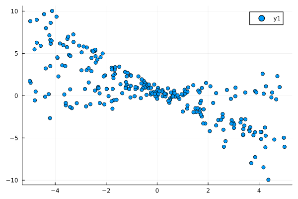
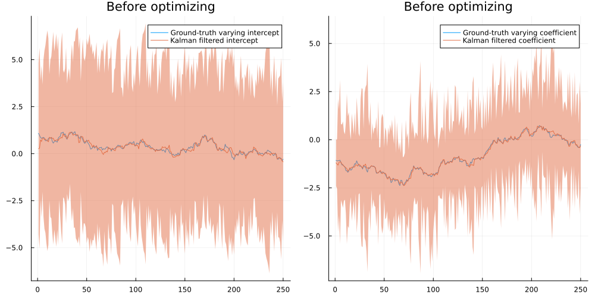
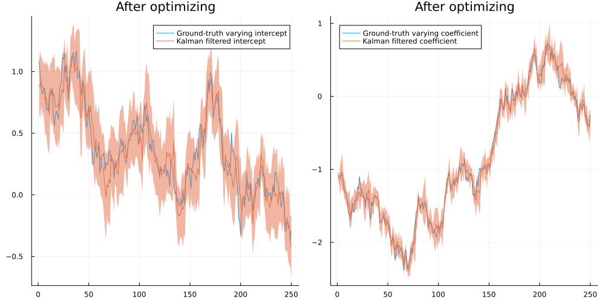
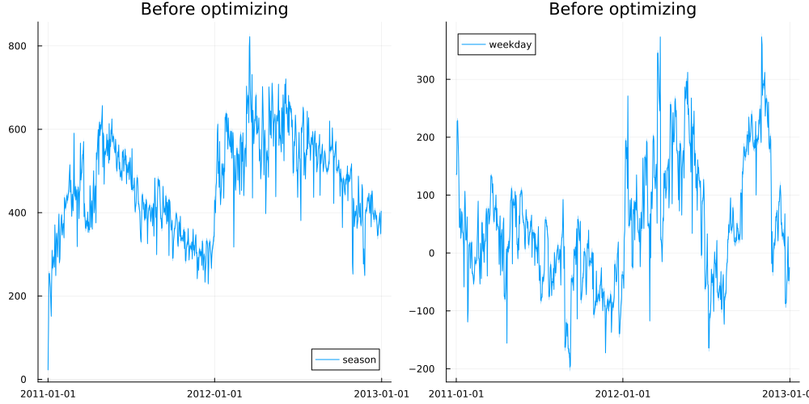
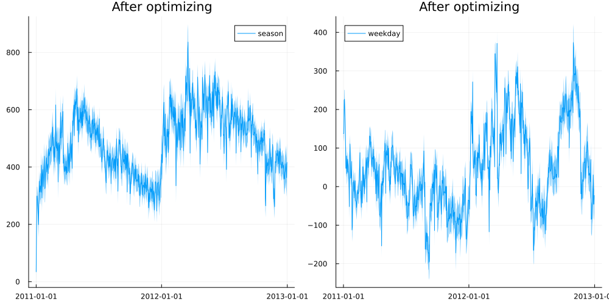
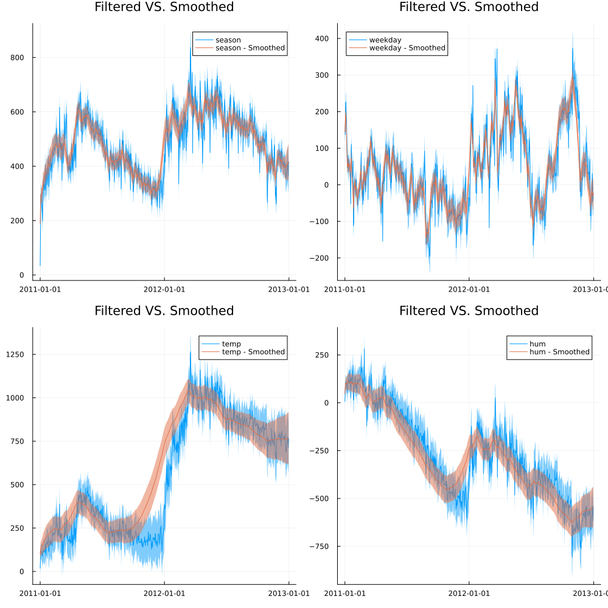

using Distributions, Plots, StatsPlots, LinearAlgebra, Flux, Zygote, RandomModels with time-varying coefficients
Random.seed!(123)
b0 = 1 .+cumsum(randn(250) .*0.1)
b1 = -1 .+cumsum(randn(250) .*0.1)
X = rand(250) .*10 .-5
y = b0 .+ b1 .* X .+ randn(250).*0.1
scatter(X,y)
struct TimeVaryingRegression
#Presumes that all coefficients are driven by a random walk
observation_variance
rw_variances
coeff_means_0
coeff_vars_0
end
Flux.@functor TimeVaryingRegression
TimeVaryingRegression(n_coeffs) = TimeVaryingRegression(ones(1,1), ones(n_coeffs), zeros(n_coeffs), ones(n_coeffs))TimeVaryingRegressionfunction kalman_filter(m::TimeVaryingRegression, y, X)
obsvar = exp(m.observation_variance[1])
rw_variances = exp.(m.rw_variances)
coeff_means_0 = m.coeff_means_0
coeff_vars_0 = exp.(m.coeff_vars_0)
return kalman_recursion(y,X,obsvar,rw_variances,coeff_means_0,coeff_vars_0)
end
function kalman_recursion(y, X, obsvar, rw_variances, coeff_means_tm1, coeff_vars_tm1)
coeff_vars_t = coeff_vars_tm1 .+ rw_variances
coeff_means_t = coeff_means_tm1
y_t = y[1]
X_t = X[:,1]
y_t_mean = sum(coeff_means_t .* X_t)
y_t_var = sum(coeff_vars_t .* X_t.^2) + obsvar
coeff_means_t_post = coeff_means_t .+ (coeff_vars_t.*X_t)./y_t_var.*(y_t-y_t_mean)
coeff_vars_t_post = coeff_vars_t .- (coeff_vars_t.*X_t).^2 ./ y_t_var
dist_t = Normal(y_t_mean, sqrt(y_t_var))
if length(y)>1
dists_tp1, coeffs_means_tp1, coeffs_vars_tp1 = kalman_recursion(y[2:end],X[:,2:end],
obsvar, rw_variances,
coeff_means_t_post,
coeff_vars_t_post)
return vcat(dist_t,dists_tp1),
hcat(coeff_means_t_post, coeffs_means_tp1),
hcat(coeff_vars_t_post, coeffs_vars_tp1)
else
return dist_t, coeff_means_t_post, coeff_vars_t_post
end
endkalman_recursion (generic function with 1 method)Xc = Matrix(transpose(hcat(ones(length(X)),X)))
model = TimeVaryingRegression(2)
dists_init, coeff_means_init, coeff_vars_init = kalman_filter(model,y,Xc)
p1 = plot(b0, label="Ground-truth varying intercept")
plot!(p1,coeff_means_init[1,:],ribbon= 2 .*sqrt.(coeff_vars_init[1,:]),label="Kalman filtered intercept")
p2 = plot(b1, label="Ground-truth varying coefficient")
plot!(p2,coeff_means_init[2,:],ribbon= 2 .*sqrt.(coeff_vars_init[2,:]),label="Kalman filtered coefficient")
plot(p1,p2,size=(1000,500),fmt=:png,title="Before optimizing")
params = Flux.params(model)
opt = ADAM(0.01)
for i in 1:750
grads = Zygote.gradient(()->-mean(logpdf.(kalman_filter(model,y,Xc)[1],y)),params)
Flux.Optimise.update!(opt,params,grads)
if i%75==0
println(mean(logpdf.(kalman_filter(model,y,Xc)[1],y)))
end
end-2.288221451538594
-1.9186016853033478
-1.5566676823511598
-1.2105732966002392
-0.8960431987239883
-0.6384258159294061
-0.46535619001464007
-0.3817636167174806
-0.3554198660243631
-0.349155862641175dists_opt, coeff_means_opt, coeff_vars_opt = kalman_filter(model,y,Xc)
p1 = plot(b0, label="Ground-truth varying intercept")
plot!(p1,coeff_means_opt[1,:],ribbon= 2 .*sqrt.(coeff_vars_opt[1,:]),label="Kalman filtered intercept")
p2 = plot(b1, label="Ground-truth varying coefficient")
plot!(p2,coeff_means_opt[2,:],ribbon= 2 .*sqrt.(coeff_vars_opt[2,:]),label="Kalman filtered coefficient")
plot(p1,p2,size=(1000,500),fmt=:png,title="After optimizing")
Actual dataset
http://archive.ics.uci.edu/ml/datasets/Bike+Sharing+Dataset
using CSV, DataFramesdf = CSV.File("Bike-Sharing-Dataset/day.csv") |> DataFrame
dates = df[!,:dteday]
X_bikes = Float64.(transpose(Matrix(df)[:,3:end-3]))
feature_names = names(df)[3:end-3]
y_bikes = Float64.(Matrix(df)[:,end])731-element Vector{Float64}:
985.0
801.0
1349.0
1562.0
1600.0
1606.0
1510.0
959.0
822.0
1321.0
1263.0
1162.0
1406.0
⋮
4128.0
3623.0
1749.0
1787.0
920.0
1013.0
441.0
2114.0
3095.0
1341.0
1796.0
2729.0model_bikes = TimeVaryingRegression(size(X_bikes,1))
dists_init, coeff_means_init, coeff_vars_init = kalman_filter(model_bikes,y_bikes,X_bikes)
p1 = plot(dates,coeff_means_init[1,:],ribbon= 2 .*sqrt.(coeff_vars_init[1,:]),label=feature_names[1])
p2 = plot(dates,coeff_means_init[5,:],ribbon= 2 .*sqrt.(coeff_vars_init[5,:]),label=feature_names[5])
plot(p1,p2,size=(1000,500),fmt=:png,title="Before optimizing")
params = Flux.params(model_bikes)
opt = ADAM(0.01)
for i in 1:1000
grads = Zygote.gradient(()->-mean(logpdf.(kalman_filter(model_bikes,y_bikes,X_bikes)[1],y_bikes)),params)
Flux.Optimise.update!(opt,params,grads)
if i%100==0
println(mean(logpdf.(kalman_filter(model_bikes,y_bikes,X_bikes)[1],y_bikes)))
end
end-238.7240357728576
-136.91278037253636
-91.21076715361971
-66.48041590921156
-51.461287011112326
-41.59519891957266
-34.73519418523346
-29.75560682594894
-26.016930691810636
-23.132324011570695dists_opt, coeff_means_opt, coeff_vars_opt = kalman_filter(model_bikes,y_bikes,X_bikes)
p1 = plot(dates,coeff_means_opt[1,:],ribbon= 2 .*sqrt.(coeff_vars_opt[1,:]),label=feature_names[1])
p2 = plot(dates,coeff_means_opt[5,:],ribbon= 2 .*sqrt.(coeff_vars_opt[5,:]),label=feature_names[5])
plot(p1,p2,size=(1000,500),fmt=:png,title="After optimizing")
function kalman_smoother(m::TimeVaryingRegression, coeff_means_post, coeff_vars_post)
coeff_means_TT = coeff_means_post[:,end]
coeff_vars_TT = coeff_vars_post[:,end]
rw_variances = exp.(m.rw_variances)
coeff_means_tT, coeff_vars_tT = kalman_smoothing_recs(coeff_means_post[:,1:end-1], coeff_vars_post[:,1:end-1],rw_variances,coeff_means_TT,coeff_vars_TT)
return hcat(coeff_means_tT, coeff_means_TT), hcat(coeff_vars_tT, coeff_vars_TT)
end
function kalman_smoothing_recs(coeff_means_post, coeff_vars_post, rw_variances, coeff_means_tt, coeff_vars_tt)
coeff_m_tm1 = coeff_means_post[:,end]
coeff_v_tm1 = coeff_vars_post[:,end]
coeff_m_t = coeff_m_tm1
coeff_v_t = coeff_v_tm1 .+ rw_variances
coeff_m_tT = coeff_m_tm1 .+ coeff_v_tm1./coeff_v_t.*(coeff_means_tt.-coeff_m_t)
coeff_v_tT = coeff_v_tm1 .+ (coeff_v_tm1./coeff_v_t).^2 .* (coeff_vars_tt .- coeff_v_t)
if size(coeff_means_post,2)>1
coeff_means_tT, coeff_vars_tT = kalman_smoothing_recs(coeff_means_post[:,1:end-1], coeff_vars_post[:,1:end-1],rw_variances, coeff_m_tT, coeff_v_tT)
return hcat(coeff_means_tT, coeff_m_tT),hcat(coeff_vars_tT, coeff_v_tT)
else
return coeff_m_tT, coeff_v_tT
end
endkalman_smoothing_recs (generic function with 1 method)coeff_m_s, coeff_v_s = kalman_smoother(model_bikes, coeff_means_opt, coeff_vars_opt)
f1 = 1
f2 = 5
f3 = 8
f4 = 10
p1 = plot(dates,coeff_means_opt[f1,:],ribbon= 2 .*sqrt.(coeff_vars_opt[f1,:]),label=feature_names[f1])
plot!(p1,dates,coeff_m_s[f1,:],ribbon= 2 .*sqrt.(coeff_v_s[f1,:]),label=feature_names[f1]*" - Smoothed")
p2 = plot(dates,coeff_means_opt[f2,:],ribbon= 2 .*sqrt.(coeff_vars_opt[f2,:]),label=feature_names[f2])
plot!(p2,dates,coeff_m_s[f2,:],ribbon= 2 .*sqrt.(coeff_v_s[f2,:]),label=feature_names[f2]*" - Smoothed")
p3 = plot(dates,coeff_means_opt[f3,:],ribbon= 2 .*sqrt.(coeff_vars_opt[f3,:]),label=feature_names[f3])
plot!(p3,dates,coeff_m_s[f3,:],ribbon= 2 .*sqrt.(coeff_v_s[f3,:]),label=feature_names[f3]*" - Smoothed")
p4 = plot(dates,coeff_means_opt[f4,:],ribbon= 2 .*sqrt.(coeff_vars_opt[f4,:]),label=feature_names[f4])
plot!(p4,dates,coeff_m_s[f4,:],ribbon= 2 .*sqrt.(coeff_v_s[f4,:]),label=feature_names[f4]*" - Smoothed")
plot(p1,p2,p3,p4,size=(1000,1000),title = "Filtered VS. Smoothed",fmt=:png)